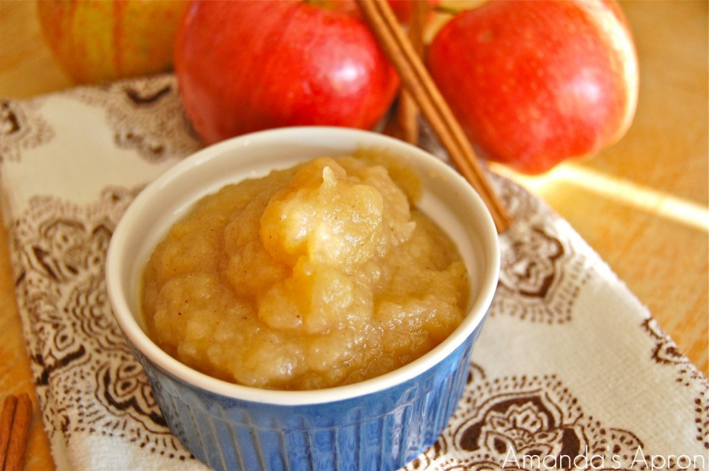

Ingredients:
6-7 older apples (Gala, Granny Smith or Red will do)
4-5 dashes ground cinnamon
1 cinnamon stick (optional)
1/4 Cup water
Directions:
- Peel Apples and carve out any brown spots
- Dice apples to bite size pieces.
- Combine apples, cinnamon, and water in a saucepan on medium heat. If you use a cinnamon stick, be sure to push it down to submerge it under the water.
- Cover and cook on medium-low heat for 20 minutes.
- Uncover the pot and continue cooking for ten minutes or until the water has evaporated.
For thicker applesauce, mash with a potato masher. For smooth applesauce, blend in a food processor to desired consistency.